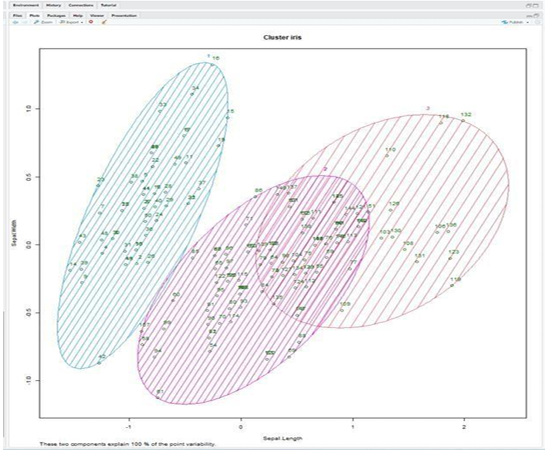

To group the IRIS (flower) data points into two different clusters with the help k-means clustering algorithm.
o Install the necessary packages in R Studio such as “stats”,”dplyr”, “ggplot2”, “ggfortify”
o Set the current working directory
o Save the IRIS dataset in the current working directory
o Read the dataset in the form of csv file using read.csv ()
o Finally create the model (k=2) with the help of k-means clustering algorithm
# Loading data
data(iris)
# Structre
str(iris)
# Installing Packages
install.packages("Cluster")
install. packages("cluster")
# Loading package
library(ClusterR)
library(cluster)
# Removing initial label of
# Species from original dataset
iris_1 <- iris[, -5]
# Fitting K-Means clustering Model
# to training dataset
set.seed(240) # Setting seed
kmeans.re <- kmeans(iris_1, centers = 3, nstart = 20) kmeans.re
# Cluster identification for
# each observation kmeans.re$cluster
# Confusion Matrix
cm <- table(iris$Species, kmeans.re$cluster) cm
# Model Evaluation and visualization
plot (iris_1[c("Sepal.Length", "Sepal.Width")])
plot (iris_1[c("Sepal.Length", "Sepal.Width")], col = kmeans.re$cluster)
plot(iris_1[c("Sepal.Length", "Sepal.Width")],col = kmeans.re$cluster,main = "K-means with 3 clusters")
## Plotiing cluster centers kmeans.re$centers
kmeans.re$centers[, c("Sepal.Length", "Sepal.Width")]
# cex is font size, pch is symbol
points(kmeans.re$centers[, c("Sepal.Length", "Sepal.Width")], col = 1:3, pch = 8, cex = 3)
## Visualizing clusters y_kmeans <- kmeans.re$cluster
clusplot(iris_1[, c("Sepal.Length", "Sepal.Width")], y_kmeans,
lines = 0,
shade = TRUE,
color = TRUE,
labels = 2,
plotchar = FALSE,
span = TRUE,
main = paste("Cluster iris"), xlab = 'Sepal.Length', ylab = 'Sepal.Width')
